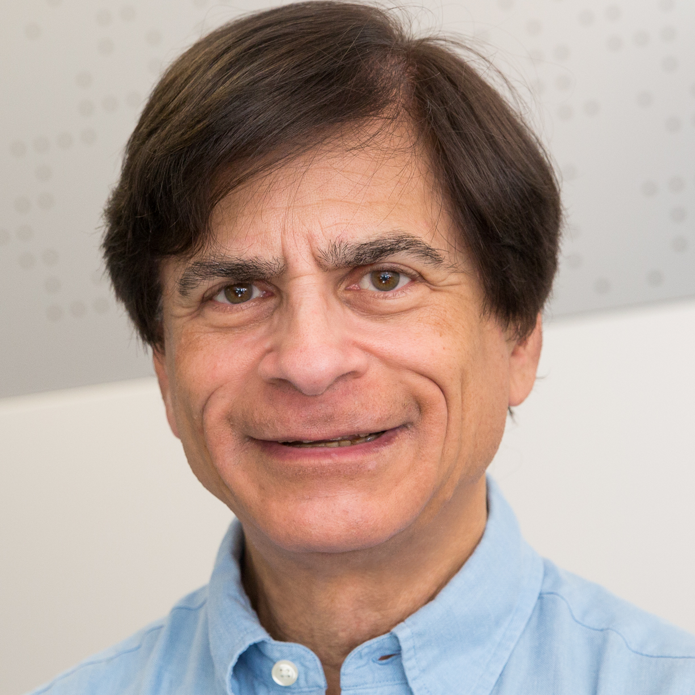

IEEE ISMAR 2026 · Bari, Italy
XRMemory: 4th International Workshop on Spatial Memory in XR
A half-day in-person workshop on recording, representing, replaying, and sharing dynamic spatial experiences through XR, AI, graphics, spatial computing, and HCI.
Overview
XRMemory focuses on the emerging challenge of recording and representing spatial experiences in a way that supports adaptive playback, particularly within XR environments.
While photos and videos have long served as passive memory aids, AR/VR technologies and spatial computing now enable the capture of experiences that are immersive, interactive, and reconfigurable. These experiences may include recorded scenes, virtual avatars, AI agents, and other immersed and non-immersed humans.
The workshop aims to bring together experts across AI, XR, graphics, HCI, spatial computing, and large language models to investigate the technological foundations for capturing, recreating, and sharing dynamic spatial experiences.
Important Dates
All deadlines are 23:59:59 Anywhere on Earth (GMT/UTC-12:00).
Topics of Interest
AI-Driven Recall
Techniques for enhancing spatial memory recall in XR.
Experience Capture
Methods for capturing and reconstructing personal experiences in immersive spaces.
Scene Understanding
Semantic content reconstruction, scene graphs, and spatiotemporal segmentation.
Multisensory Memory
Visual, auditory, and haptic integration and their impact on memory.
Adaptive Playback
Interactive re-experiencing, fidelity, reliability, and user-centered replay.
Agents and Avatars
The role of avatars, AI agents, and LLMs in memory creation and interaction.
Workshop Format
15 min
Opening Remarks and XRMemory Overview
Introduction to the goals and scope of XRMemory research, with emphasis on adaptive playback and immersive memory systems.
30 min
Keynote Presentation - Doug A. Bowman
Professor Doug A. Bowman, tentatively agreed, will share perspectives on immersive 3D interaction, spatial experience design, and re-experiencing rich spatial contexts across time and space.
1-1.5 hours
Workshop Paper Presentations
Six to eight peer-reviewed papers covering capture, representation, reconstruction, multisensory recording, and adaptive replay.
~75 min
Open Group Discussion
Small mixed breakout groups will discuss capture mechanisms, adaptive playback fidelity, trustworthiness, ethics, and user-experience implications, followed by a plenary share-out.
Call for Papers
XRMemory welcomes 2 to 6 page papers, excluding references, formatted according to the IEEE Computer Society VGTC conference standards.
Position Papers
Unique insights, opinions, and forward-looking ideas.
Research Papers
Latest advancements, results, applications, and systems related to spatial memory in XR.
Survey Papers
Comprehensive views of the research landscape, gaps, and future opportunities.
Project Papers
Approaches and objectives of ongoing or planned projects.
Submission Guidelines
- Originality
- All papers should be original works that are not under review by any other journal or conference.
- Format
- Submissions must be written in English and formatted according to the IEEE Computer Society VGTC conference standards.
- Templates
- Templates are available at tc.computer.org/vgtc/publications/conference/.
- Submission
- Papers should be submitted electronically in PDF format. The submission link will be announced on this page.
- Review
- Each submission will undergo a single-blind review process conducted by the workshop's international program committee. Authors submit papers with names included; reviewers know authors' identities, while authors do not know reviewer identities.
- Publication
- Accepted papers will be submitted for inclusion in the IEEE Digital Library. Camera-ready versions must be prepared using the IEEE VGTC format.
Organizers

Program Committee
The workshop organizers and invited committee members will serve as the initial international program committee.
Dooyoung Kim (La Trobe University, Incoming), Woontack Woo (KAIST), Steven K. Feiner (Columbia University), Doug A. Bowman (Virginia Tech), Kangsoo Kim (University of Calgary), Gun A. Lee (Adelaide University), and Niall L. Williams (Barnard College, incoming).
Acknowledgment
The Microsoft CMT service was used for managing the peer-reviewing process for this conference. This service was provided for free by Microsoft and they bore all expenses, including costs for Azure cloud services as well as for software development and support.
Contact
For inquiries about XRMemory at IEEE ISMAR 2026, contact the organizers at xrmemory.ismar2026@gmail.com.